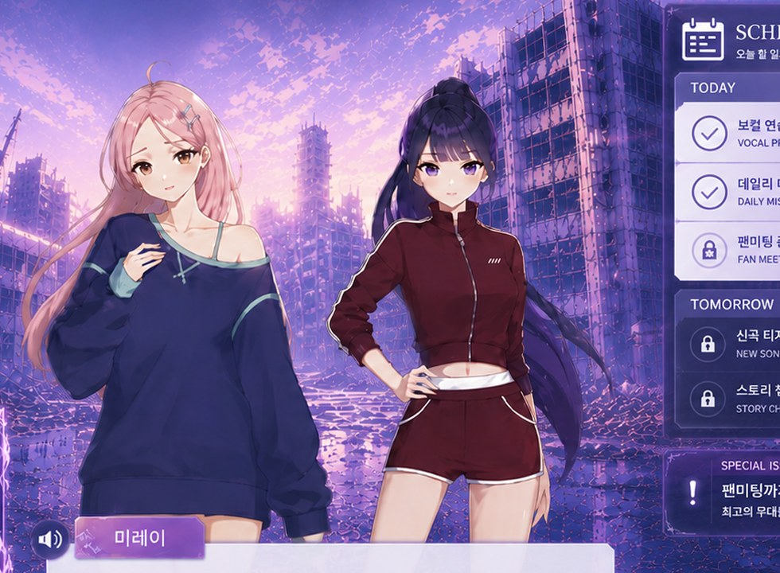
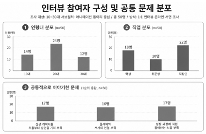

스토리 감상
다섯 아이돌의 상황과 관계, 다음 무대의 단서를 읽습니다.
 PROJECT NOTE · PRE-MVP
PROJECT NOTE · PRE-MVP
V.E.L.O.는 리듬게임 플레이로 다섯 아이돌의 다음 이야기를 열어가는 스토리 해금형 아이돌 리듬게임입니다. 오컬트 콘셉트의 자체 제작 아이돌을 중심으로 비주얼 노벨과 리듬게임을 결합하기 위해 8명의 팀원이 머리를 맞대고 있습니다.

개발 중인 화면 시안으로, 실제 MVP에서는 변경될 수 있습니다.
우리의 목적은 단순히 리듬게임 하나를 만드는 것이 아닙니다. 아직 아무도 모르는 한국형 가상 아이돌을 데뷔 전부터 발견하고, 이야기를 따라가며 성장에 참여하는 팬 경험을 만들고자 합니다.
대표자는 서브컬처·리듬게임·아이돌 팬덤 콘텐츠를 직접 소비하며 관련 게임과 콘텐츠 약 100개를 검토했습니다. 그 과정에서 캐릭터와 서사에 몰입하는 팬은 많지만, 인지도 0의 한국형 신생 아이돌을 처음부터 발견하고 성장에 참여할 수 있는 게임형 콘텐츠는 부족하다는 문제의식을 발견했습니다.
“이미 완성된 스타를 만나는 것이 아니라,
아직 아무도 모르는 다섯 명의 첫 팬이 되는 것.”
10~30대 서브컬처·애니메이션 동아리 구성원을 중심으로 1:1 인터뷰와 온라인 서면 조사를 진행했습니다.

| 고객이 말한 문제 | 고객의 목소리 | V.E.L.O.의 대응 |
|---|---|---|
| 신생 캐릭터를 발견할 기회 부족 | “이미 팬덤이 큰 작품도 좋지만, 처음부터 알아갈 수 있는 캐릭터가 없어서 아쉬워요.” | 인지도 0의 5인 아이돌을 데뷔 전부터 소개 |
| 플레이와 서사의 연결 부족 | “게임은 하는데 스토리를 볼 이유는 없어서 스킵만 했어요.” | 리듬게임과 주차 스케줄 완료로 다음 이야기 해금 |
| 성장 과정에 참여하고 싶은 욕구 | “팔로우하고 소식을 챙겨보기 시작할 때 진짜 팬이 된 느낌이 들었어요.” | 공식 소식과 팬 커뮤니티를 통한 지속 참여 |
조사 해석 범위 이 결과는 게임 플레이 평가가 아니라, 개발 전 문제와 관심 요소를 확인하기 위한 사전 조사입니다. “게임이 재미있다”는 가설은 MVP 플레이테스트에서 별도로 검증합니다.
팬의 관심이 플레이와 이야기 사이에서 끊기지 않도록, 모든 핵심 시스템이 다음 서사를 향하게 설계하고 있습니다.
아이돌 리듬게임의 팬 경험과 비주얼 노벨의 서사 몰입을 결합합니다. 장르 구조는 기존 아이돌 리듬게임의 성공 사례를 분석해 참고하되, V.E.L.O.의 캐릭터·세계관·스토리는 독자적으로 제작합니다.
〈앙상블스타즈〉의 캐릭터·서사 중심 팬 경험과, 〈케이팝 데몬 헌터스〉 사자 보이즈가 보여준 K-pop과 오컬트의 대비감을 참고 사례로 분석했습니다. 각 작품과 공식 제휴 관계는 없으며, V.E.L.O.의 설정은 새롭게 창작합니다.
다섯 아이돌의 상황과 관계, 다음 무대의 단서를 읽습니다.
스토리 감상과 LIVE 플레이로 한 주의 필수 일정을 완료합니다.
다섯 멤버 레인과 귀신 전용 레인으로 자정의 무대를 완성합니다.
주차 목표를 달성하면 새로운 사건과 멤버 서사가 열립니다.
다섯 개 레인은 각 멤버의 무대를 상징하고, 여섯 번째 레인에는 영령 관객이 출현합니다. 이 레인에서 BAD 판정이 발생하면 즉시 무대가 끝나는 기믹을 검토하고 있습니다. 오컬트 설정이 장식에 머물지 않고 실제 플레이 긴장감으로 연결되게 하기 위한 설계입니다.
LOGLINE대자본의 폭력에 모든 것을 빼앗기고 지하로 추락한 5인의 아이돌과 한 명의 프로듀서가, 이승의 견고한 벽을 부수기 위해 심연의 존재들과 영혼의 스폰서십을 맺고 아이돌의 정점을 향해 반격하는 이야기.
대기업 엔터테인먼트의 유능한 프로듀서였지만, 강압적인 통제에 저항한 첫 그룹이 해체되고 멤버가 희생되는 비극을 막지 못했습니다.
과거와 똑같이 희생양이 될 위기에 놓인 다섯 연습생을 만나, 모든 커리어를 버리고 이들을 이끌고 회사를 탈출합니다.
자신들을 매장한 대기업의 시장에서 누구도 부정할 수 없는 독보적인 정점에 다섯 아이돌을 올리는 것입니다.
과거의 비극을 속죄하고, 사람의 꿈과 생명을 돈과 권력으로 짓밟는 시스템을 뿌리부터 무너뜨리고자 합니다.
세상 모두가 손가락질할 때 서로만은 끝까지 편이 되어주는 관계가 이야기의 감정적 중심입니다.
무대 위에서는 최고의 합, 무대 밖에서는 끊임없이 으르렁대는 앙숙. 서윤의 낙천성을 미나는 “생각 없음”으로 받아들입니다.
나이는 하나가 많지만 정신적 지주는 막내 지우. “언니, 내가 지켜줄게!”라는 자매 같은 케미를 형성합니다.
멤버들이 힘들 때 가장 먼저 나서는 엄마 같은 존재이며, 프로듀서와 감정적으로 가장 긴밀하게 연결됩니다.
프로듀서에게 멤버들은 상품이 아니라 속죄와 구원의 가능성입니다. 서로의 결핍이 이들을 하나의 가족으로 묶습니다.
현재는 프리-MVP 단계입니다. 아래 내용은 성과가 아니라, 실제 플레이테스트로 반드시 확인해야 할 가설입니다.
플레이어가 각 멤버를 구분해 기억하고, 다음 화를 열기 위해 플레이하고 싶어지는지 확인합니다.
스토리 장면과 리듬게임의 데모 음원이 감정적으로 어울리고, 무대 몰입을 높이는지 검증합니다.
주차 스케줄과 스토리 해금 루프가 반복 플레이 동기로 작동하는지 확인합니다.
음원 제작 공개 원칙 MVP 단계의 데모 음원은 생성형 AI를 활용해 팀이 기획·제작합니다. 플레이테스트에서는 음원의 출처를 투명하게 알리고, 스토리와의 적합성 및 몰입 효과를 검증할 예정입니다.
FOLLOW THE PROJECT
지금은 0화부터 스토리를 읽고, 팬존에서 세계관과 멤버에 대한 첫인상을 남길 수 있습니다.